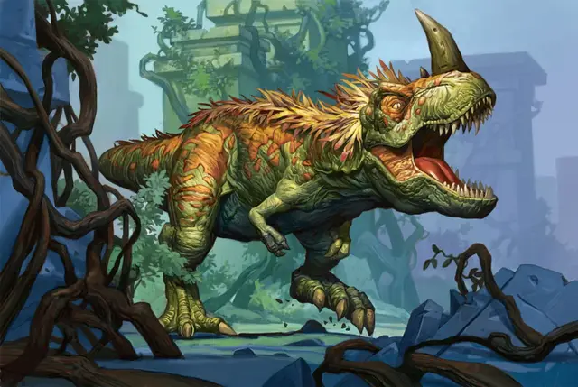

Король Перьев
King of Feathers
Огромный Монстр, без мировоззрения, именной НИП

Класс Доспеха 13 (природный доспех)
Хиты 200 (13к12 + 116)
Скорость 50 футов
| мод | спас | ||
|---|---|---|---|
| СИЛ | 25 | +7 | +7 |
| ЛОВ | 10 | +0 | +0 |
| ТЕЛ | 19 | +4 | +4 |
| мод | спас | ||
|---|---|---|---|
| ИНТ | 2 | −4 | −4 |
| МДР | 12 | +1 | +1 |
| ХАР | 9 | −1 | −1 |
Навыки Восприятие +4
Чувства пассивное Восприятие 14
Опасность 8 (3900 опыта)
Бонус мастерства +3
Особенности
Видение невидимого. Король Перьев может видеть невидимых существ и объекты, как если бы они были видимы.
Врождённое колдовство. Король Перьев может неограниченно накладывать туманный шаг [misty step], не требуя никаких компонентов. Базовой характеристикой для этого заклинания является Мудрость.
Легендарное сопротивление (3/день). Если Король Перьев проваливает спасбросок, он может вместо этого сделать спасбросок успешным.
Действия
Мультиатака. Король совершает две атаки: одну укусом, и одну хвостом. Он не может совершить обе атаки по одной и той же цели.
Укус. Рукопашная атака оружием: +10 к попаданию, досягаемость 10 футов, одна цель. Попадание: Колющий урон 33 (4к12 + 7). Если цель — существо с размером не больше Среднего, она становится схваченной (Сл высвобождения 17). Пока цель схвачена, она опутана, и Король не может кусать другую цель.
Хвост. Рукопашная атака оружием: +10 к попаданию, досягаемость 10 футов, одна цель. Попадание: Дробящий урон 20 (3к8 + 7).
Призыв роя (перезарядка 5-6). Король Перьев выдыхает рой насекомых (ос) [swarm of insects], который появляются в свободном пространстве в пределах 20 футов от него. Рой действует как союзник Короля Перьев и начинает свой ход сразу после него. Рой рассеивается через 1 минуту. Пока существо схвачено Укусом, Король не может использовать это действие.
Описание
Чудовищный тираннозавр рекс [tyrannosaurus rex], известный как Король Перьев, является бесспорным правителем Ому. Большинство других жителей Запретного города живут в страхе перед его грозным приближением и держатся подальше от амфитеатра – его логова.
Короля Перьев можно встретить в любом месте Ому. Держите персонажей в напряжении, например, они могут заметить его силуэт в тумане или услышать его рёв, который оглушительным эхом проносится по руинам. Он может показаться, когда персонажи исследуют руины или отдыхают. В качестве альтернативы, он может прервать бой и уйти, если столкновение с ним оказалось слишком лёгким (или слишком трудным).